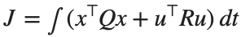
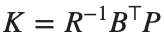

Reference Tracking과 Optimal Control · 학습
실행 조건
MATLAB · Control System Toolbox
이번에 배울 내용
안정한 제어기에서도 목표값 오차가 남는 이유를 확인하고, 추종 성능과 제어입력 비용을 비교합니다.
안정성과 목표 추종은 다른 조건
u=−Kx는 원점으로 상태를 보내는 Regulator입니다. 목표값 r을 넣을 때  로 두고 명목 모델의 Steady State 식에서 N을 계산합니다.
로 두고 명목 모델의 Steady State 식에서 N을 계산합니다.
안정성은  로 판단하고, 추종값은 Reference 경로까지 포함해 계산합니다.
로 판단하고, 추종값은 Reference 경로까지 포함해 계산합니다.
로 판단하고, 추종값은 Reference 경로까지 포함해 계산합니다.LQR의 비용을 읽는 방법
상태 편차와 입력 사용량의 비용을

로 둡니다. Q를 키우면 그 상태 편차를 더 비싸게 평가합니다.이것이 모든 지표를 동시에 개선한다는 뜻은 아닙니다. 서로 단위가 다른 상태는 기준 크기로 정규화하거나 가중치의 단위를 해석해야 합니다.
이번 모델은 상태와 입력을 정규화한 2차 시스템입니다.  과 적절한 가제어성 조건 아래 CARE를 풀어
과 적절한 가제어성 조건 아래 CARE를 풀어

를 구합니다. 입력이 포화되면 이 선형·무제약 설계의 최적성을 그대로 적용할 수 없습니다.MATLAB으로 같은 설계 확인하기
Reference Gain은 원하는 Steady State 출력에 맞춰 입력의 크기를 조정합니다. LQR의 상태 Feedback Gain은 상태 오차와 제어 입력에 부여한 비용으로 정해집니다.
같은 Pole, 다른 목표 추종
제어 Pole을 고정하고 Reference 이득만 바꾸어 Steady State 값의 차이를 확인합니다.
%% Worked example
A=[0 1;-2 -3]; B=[0;1]; C=[1 0]; K=place(A,B,[-2 -4]);
N=-1/(C*((A-B*K)\B)); disp(K); disp(N); assert(abs(N-8)<1e-10);
t=linspace(0,5,1001)'; figure; hold on
for gain=[1 N]
y=lsim(ss(A-B*K,B*gain,C,0),ones(size(t)),t);
plot(t,y,'DisplayName',sprintf('N=%g',gain));
end
xlabel('Time [s]'); ylabel('Position'); legend; grid on
[Klqr,P]=lqr(A,B,diag([4 1]),1); disp(Klqr); disp(eig(A-B*Klqr));